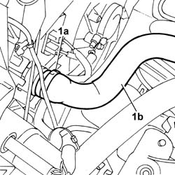
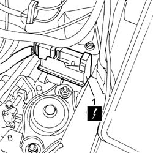
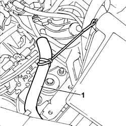
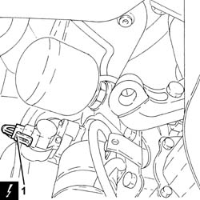
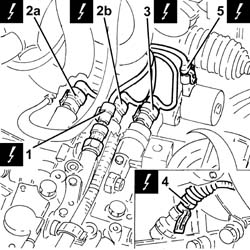
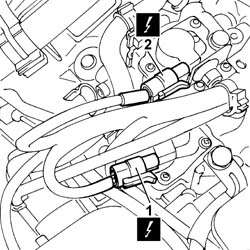
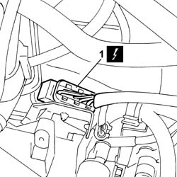

2127E94 wiring for manual gearbox hydraulic selection system on hydraulic selection unit r r or change
- Path
- Procedures > 21 GEARBOX UNIT > 2127 ELECTRO-HYDRAULIC SELECTION. GEARBOX EXTERNAL. CONTROLS > 2127E electric speed selection system > 2127E94 wiring for manual gearbox hydraulic selection system on hydraulic selection unit r r or change
- Kind
- repair procedure (removal / refitting; the operation number is the code)
- Applies to
- engines: 1.2 8v; all production periods
- Interactive page
- https://sloeber94.github.io/elrnDB-fPnd/en/#/2752693
Applies to: engines: 1.2 8v; all production periods
 Removing
Removing
 Refitting
RefittingRemove the car from the ramps.
5530B56 BATTERY DRIP TRAY COVER - R.R.
5530B52 Battery DRIP TRAY/SUPPORT - R.R.
Position a suitable container to collect the coolant.
1. Open the retaining band (1a) and disconnect the pipe (1b), radiator side.
Move the pipe away from the work area.

Applies to: engines: 1.2 8v; all production periods
1. Disconnecct the electrical connection of the braking system control unit.
 | Name | Connector |
|---|---|---|
1 | Braking system control unit | M51 |

Applies to: engines: 1.2 8v; all production periods
1. Move the front wiring sectio aware from the work area.

Applies to: engines: 1.2 8v; all production periods
1. Disconnect the electrical connection of the gear selection position potentiometer.
| Name | Connector |
|---|---|---|
1 | Speed selection potentiometer | K68 |

Applies to: engines: 1.2 8v; all production periods
1. Disconnect the electrical connection from the electro-hydraulic gear selection hydraulic circuit pressure sensor.
| Name | Connector |
|---|---|---|
1 | Pressure sensor on transmission | K96 |
2. Disconnect electrical connections (2a) and (2b) from the even and odd gear engagement solenoids.
| Name | Connector |
|---|---|---|
2a | Solenoid 1 gear engagement | L51 |
| Name | Connector |
|---|---|---|
2b | Solenoid 2 gear engagement | L52 |
3. Disconnect the electrical connection on the clutch control solenoid.
| Name | Connector |
|---|---|---|
3 | Clutch control solenoid | L56 |
4. Disconnect the electrical connection from the electro-hydraulic gear selection input shaft speed sensor.
| Name | Connector |
|---|---|---|
4 | Transmission output speed sensor | K77 |
5. Disconnect the electrical connection of the gear selection solenoid.
| Name | Connector |
|---|---|---|
5 | Solenoid 3 gear engagement | L53 |

Applies to: engines: 1.2 8v; all production periods
1. Disconnect the electrical connection from the gear engagement position sensor.
| Name | Connector |
|---|---|---|
1 | Gear shift potentiometer | K69 |
2. Disconnect the electrical connection from the electro-hydraulic gear selection clutch position sensor.
| Name | Connector |
|---|---|---|
2 | Clutch position potentiometer | K95 |

Applies to: engines: 1.2 8v; all production periods
1. Disconnect the gearbox sensors junction.
| Name | Connector |
|---|---|---|
1 | Transmission sensor junction | D79 |

Applies to: engines: 1.2 8v; all production periods
Remove the manual gearbox electrohydraulic selection system wiring on the hydraulic selection unit after releasing from the retaining clips.
Applies to: engines: 1.2 8v; all production periods
Refitting
RemovingCheck that the wiring is not damaged.
If this is not the case, replace the wiring.
If necessary, check the continuity between the individual electrical connectors.
Position the wiring in its seating, securing it to the retaining clips.
Connect the gearbox sensors junction.
| Name | Connector |
|---|---|---|
- | Transmission sensor junction | D79 |
Connect the electrical connection to the gear engagement position sensor.
| Name | Connector |
|---|---|---|
- | Gear shift potentiometer | K69 |
Connect the electrical connection to the electro-hydraulic gear selection clutch position sensor.
| Name | Connector |
|---|---|---|
- | Clutch position potentiometer | K95 |
Connect the electrical connection to the electro-hydraulic gear selection hydraulic circuit pressure sensor.
| Name | Connector |
|---|---|---|
- | Pressure sensor on transmission | K96 |
Connect the electrical connections of the even and odd gear engagement solenoids.
| Name | Connector |
|---|---|---|
- | Solenoid 1 gear engagement | L51 |
| Name | Connector |
|---|---|---|
- | Solenoid 2 gear engagement | L52 |
Connect the electrical connection on the clutch control solenoid.
| Name | Connector |
|---|---|---|
- | Clutch control solenoid | L56 |
Connect the electrical connection to the electro-hydraulic gear selection input shaft speed sensor.
| Name | Connector |
|---|---|---|
- | Transmission output speed sensor | K77 |
Connect the electrical connection for the gear selection solenoid.
| Name | Connector |
|---|---|---|
- | Solenoid 3 gear engagement | L53 |
Connect the electrical connection to the gear selection position potentiometer.
| Name | Connector |
|---|---|---|
- | Speed selection potentiometer | K68 |
Refit the front wiring section.
Connect the electrical connection for the braking system control unit.
| Name | Connector |
|---|---|---|
- | Braking system control unit | M51 |
Connect the pipe from the radiator to the engine, radiator side, and secure it with the retaining band.
0010T21 coolant check density and top up if necessary
5530B52 Battery DRIP TRAY/SUPPORT - R.R.
5530B56 BATTERY DRIP TRAY COVER - R.R.
Remove the vehicle from the lift.